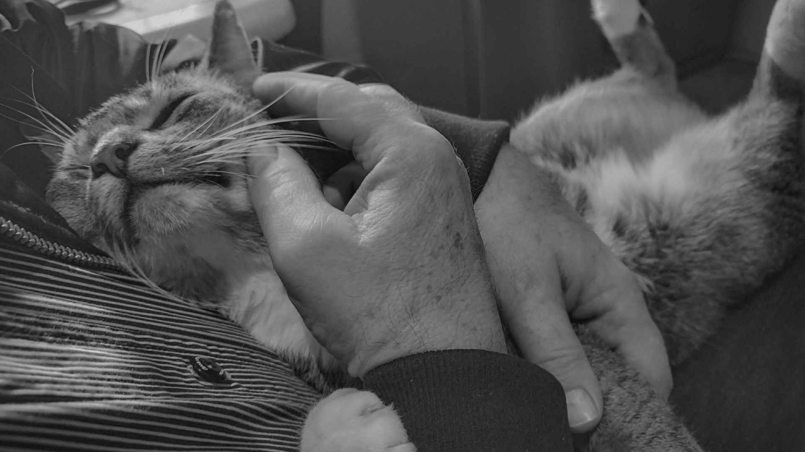
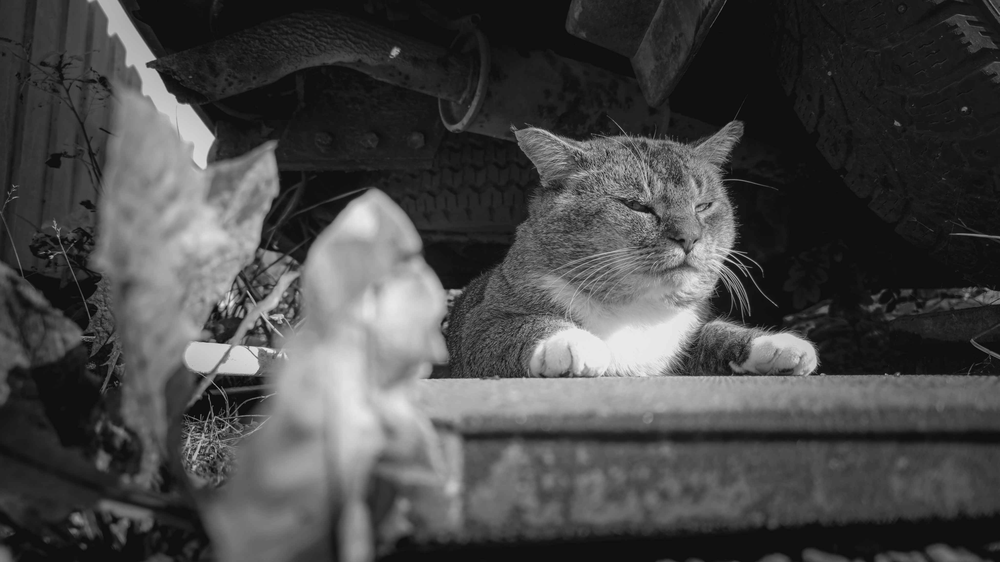

"Lo, Lord Findus doth repose upon the cold, unyielding floor, as if the earth itself were his chosen throne."

Bitches Be Barkin’, I Be Bossin'
"Though bitches bark and wag with scorn,
A noble heart doth rise unshaken,
For in the face of harsh disdain,
The spirit is not broken, but awakened." - Findus

"I have a massive cock."
- Findus
Born: March 4, 2019, Oslo, under the ethereal light of a cosmic alignment.
Residence: Svelvik, Norway, with undisclosed retreats in alternative dimensions.
Species: Felis catus (Domestic Cat), an apex lifeform in the intergalactic biosphere.
Breed: Half Somali, Half Norwegian Forest Cat, combining the elegance of two distinguished feline lineages.
Other names: The Sovereign of the Woodland Realms, The Eternal Guardian of the Purr.
Occupation: Quantum Physicist, Medical Expert, Professional Hockey Player, Global Artist, Former Lead Guitarist (Metallica, Sepultura, Gojira, Cavalera Conspiracy, Emperor, Mayhem), Viking Warrior, Somali Pirate, Astrophysicist, Culinary Chef, Yoga Master, Linguist, Environmental Activist.
Owner(s): Thor Alexander Ånderå, Thor Inge Gabriel Ånderå, Thor Inge Ånderå.
Specialty: Master of astrophysical phenomena, particularly black holes and their relation to the purr mechanism.
Hobbies: Theoretical time travel, crafting complex yarn patterns, and deciphering ancient hieroglyphs.
Notable achievements: The only known feline to successfully complete a PhD in Quantum Mechanics while simultaneously creating a bestselling album.
Past Lives: A renowned philosopher in Ancient Greece, advisor to Alexander the Great, and a secret agent during the Cold War.
Favorite pastime: Meditating for 12 hours at a time while contemplating the nature of the universe and the importance of tuna.
Global recognition: Voted "Most Inspirational Feline" by the International Federation of Advanced Lifeforms, 2022.
Secret talent: Able to decipher the most cryptic human behaviors with a single, well-timed gaze.
Signature move: The Paw of Enlightenment – an ancient technique to unlock the hidden truths of the universe.
Master of disguise: Can blend seamlessly into any environment, from Victorian parlors to bustling intergalactic spaceports.
Favorite food: A rare delicacy known only to the elite of the feline world: quantum-infused sardines.
Notable relationships: Has shared philosophical debates with several Nobel laureates and once mediated a peace treaty between two rival squirrel factions.
Intellectual pursuits: Currently working on the Unified Theory of Everything (but breaks for naps every two hours).
Influence: A thought leader in the fields of feline ethics, interspecies diplomacy, and snack-based economies.
Contributions to society: Founder of the "Paws for Peace" movement, dedicated to peaceful coexistence between cats and dogs.
Philosophical leanings: Advocate of the Purronian School of Thought, which posits that true enlightenment comes from mastering the art of purring.
Multilingual: Fluent in Meowish, Purrsian, and Ancient Catonian; currently learning Barklish as part of a cross-species research project.
Unusual hobby: Writing award-winning poetry on the transient nature of socks and the philosophical implications of laser pointers.
Secret mission: Embarked on a covert operation to retrieve the lost relic of the Litter Box Order, but it’s classified.
Recognition: Has a Nobel Prize in Purrformance, awarded for contributions to feline art and quantum wave functions.
Superpower: Hypnotic purr that can calm the most tumultuous storms or compel humans to provide treats instantly.
Future aspirations: To one day lead a feline-led intergalactic expedition to discover the origins of the universe, one nap at a time.
Findus Fiskekaker
Biography
Findus Fiskekaker was born on March 4, 2019, in the small town of Svelvik, Norway. From an early age, it was clear that Findus was not an ordinary cat. He exhibited an unusual level of curiosity and intelligence, characteristics that would later define his extraordinary life. Named after the Norwegian fish cake "fiskekaker," Findus's full name reflects a playful combination of Norwegian culture and the adventurous spirit that would come to symbolize his existence.
Findus's breed is a unique mix of Somali cat and Norwegian Forest cat. The Somali cat, known for its vibrant personality, agility, and keen hunting skills, deeply influenced Findus's character. On the other hand, the Norwegian Forest cat, with its robust build and history of surviving in the wild, contributed to his physical prowess. Despite this, Findus has always identified more strongly with his Somali heritage, embracing the adventurous and often mischievous spirit associated with Somali pirates.
Early Life and Background
Findus was born on March 4, 2019, and quickly became known for his adventurous spirit. His mixed heritage includes Somali cat and Norwegian Forest cat, although he is more inclined towards his Somali roots, often identifying as a Somali pirate. Despite his Norwegian Forest cat lineage, Findus finds this aspect of his heritage less remarkable.
Living in Svelvik, a town surrounded by dense forests and rugged landscapes, provided Findus with the perfect environment to explore his natural instincts. His home, shared with his human companions—Thor Alexander Ånderå, Thor Inge Gabriel Ånderå, and Thor Inge Ånderå—became the base for his many adventures. The Ånderå family, known for their deep love and respect for animals, provided Findus with the freedom to explore his surroundings, fueling his innate curiosity and desire for adventure.
Adventures and the Bush Dimension
Findus quickly earned the title "King of the Forest" among the local residents of Svelvik. His daily excursions into the woods became the stuff of legend. Unlike most domestic cats, who might be content with a backyard, Findus ventured deep into the wilderness, navigating the thick underbrush, towering trees, and rocky terrain with the grace and confidence of a seasoned explorer.
Many locals claim to have seen Findus patrolling the forest as if it were his kingdom, his golden eyes surveying his domain with a mixture of pride and vigilance. His physical appearance—marked by a sleek, muscular build and a luxurious, thick coat—only added to his regal aura. Despite his frequent absences, Findus always returned home, often bringing with him the spoils of his hunts, which included a variety of small animals like mice, rats, and birds.
Among the many tales surrounding Findus, none is more captivating than the story of his alleged ability to access a mystical realm known as the "bush dimension." According to local legend, this dimension is a hidden portal within the densest parts of the forest, leading directly to Valhalla, the mythical Norse afterlife. It is said that Findus, with his sharp senses and extraordinary intelligence, discovered this portal during one of his many forest adventures.
In Valhalla, as the legend goes, Findus becomes a warrior of mythical proportions, joining forces with ancient cat Vikings. These feline warriors, believed to have been lost to history, are said to rely on Findus to lead them in their eternal battles. The notion that a seemingly ordinary house cat could possess such incredible powers has only enhanced Findus’s status as a local legend. While these stories are undoubtedly steeped in myth, they reflect the deep admiration and fascination that the people of Svelvik have for their beloved King of the Forest.
Diet and Hunting
Findus’s diet is a blend of domesticated convenience and wild instinct. At home, he enjoys a regular diet of dry and wet cat food, provided by his owners. This diet ensures that he receives all the necessary nutrients to maintain his health and energy levels. However, Findus’s true passion lies in the hunt. His time spent in the forest is often punctuated by successful hunts, where he catches a variety of small animals, including mice, rats, and birds.
These hunting activities are not only a testament to his skills as a predator but also reflect his connection to his wild ancestry. The thrill of the hunt, the strategy involved, and the satisfaction of a successful catch are all essential aspects of Findus’s life, allowing him to fully embrace his role as the King of the Forest.
Cultural Impact
Findus Fiskekaker has become a cultural icon in Svelvik. His adventures, academic achievements, and mythical roles have made him a subject of fascination and admiration among the local residents. Stories about Findus' exploits are passed down from person to person, often embellished with each retelling, adding to the rich tapestry of folklore that surrounds him.
The title "King of the Forest" is not just a nickname; it represents the deep respect that the community holds for Findus. His ability to navigate both the human world and the wild forest with equal ease has made him a symbol of balance and harmony between nature and civilization.
The tales of Findus' adventures in the bush dimension and his role as a Viking warrior have inspired a new wave of local folklore. These stories, though fictional, capture the imagination of both young and old, turning Findus into a legendary figure whose deeds will be remembered for generations. The idea that a simple house cat could hold such power and influence resonates deeply with the people of Svelvik, reinforcing their belief in the magic and mystery of the natural world.
Legacy
As Findus continues to roam the forests of Svelvik, his legacy grows with each passing day. His life is a testament to the possibilities that lie beyond the ordinary, a reminder that even a domestic cat can live a life of adventure, achievement, and mystery. Whether he is navigating the complexities of quantum physics, leading a Viking charge in Valhalla, or simply enjoying a quiet moment in the sun, Findus Fiskekaker embodies the spirit of exploration and the joy of living life to the fullest.
As the years go by, the stories of Findus will likely continue to evolve, blending fact with fiction in a way that only enhances his legend. He remains a source of inspiration, not just for the people of Svelvik but for anyone who dares to dream of a life as rich and varied as that of Findus Fiskekaker, the King of the Forest.
Throughout his life, Findus has pursued various careers, showcasing his versatility and intelligence:
- Quantum Physicist
Findus’s intellectual journey began with a fascination for the mysteries of the universe. His natural curiosity led him to study quantum physics, where he earned a master’s degree. His research focused on the behavior of subatomic particles, which he observed during his long hours spent in the forest, studying the movement of light and shadows.
- Medical Expert
In addition to his work in physics, Findus pursued a master’s degree in medicine. His studies in this field were driven by his observations of nature’s healing processes. He became an expert in feline anatomy and even developed techniques for natural remedies, which he occasionally used to treat injured animals he encountered during his forest adventures.
- Astrophysics
Not satisfied with mastering quantum physics alone, Findus expanded his academic pursuits into the realm of astrophysics. His fascination with the stars and the cosmos led him to explore the origins of the universe and the complex mechanics of celestial bodies. His work in this field earned him recognition among academic circles, particularly for his theories on interstellar travel.
- Culinary Chef
Findus’s culinary talents led him to work in some of Norway’s top kitchens, where he became known for his innovative recipes and his ability to create dishes that delighted both cats and humans. His signature dish, a fusion of traditional Norwegian fishcakes with spices from the Horn of Africa, became a favorite among culinary enthusiasts.
- Former Lead Guitarist for Metallica
During a brief yet memorable period, Findus served as the lead guitarist for the heavy metal band Metallica. His exceptional musical talent and stage presence brought a new energy to the band’s performances, and though his time with them was short, it left a lasting impact on the world of music.
- Mythical Viking Warrior
In the bush dimension, Findus is believed to play the role of a Viking warrior. This mythical career, while rooted in local folklore, speaks to his legendary status and the deep respect he commands in both the human and feline communities.
- Somali Pirate
Embracing his Somali heritage, Findus also took on the role of a pirate. This career, though more symbolic than literal, reflects his adventurous spirit and his love for exploration and discovery.
- Linguist and Translator
Findus’s linguistic abilities allowed him to bridge the gap between species, working as a translator for various animal communication projects. His work in this field helped improve understanding and cooperation between humans and animals, leading to advancements in animal welfare and communication.
- Environmental Activist
A true guardian of the forest, Findus also took on the role of environmental activist. His deep connection to nature inspired him to advocate for the preservation of the forests in Svelvik and beyond. Through his efforts, he raised awareness about the importance of conservation and the need to protect natural habitats for future generations.
- Yoga Master and Wellness Guru
Findus’s mastery of yoga and meditation led him to become a wellness guru, offering classes and workshops to both humans and animals. His teachings focused on achieving balance, inner peace, and physical well-being, attracting a following of dedicated practitioners.
- Artist and Creator of "Piss Art"
In a unique and unconventional turn in his career, Findus has also made a name for himself in the art world. Known for his "piss art," Findus creates his masterpieces by urinating on canvases, producing a striking green hue that has captivated audiences worldwide. This unusual method has sparked intense debate in the art community, with some hailing it as a bold statement on the nature of creativity and others questioning its legitimacy as art.
One particularly famous incident involved Thor Alexander Ånderå's little sister, Leah Sofie Ånderå. After spending considerable time and effort painting on a canvas, she proudly displayed her work, only for Findus to urinate on it moments later. The green stain that spread across the painting added an unexpected element, leading some to speculate that Findus was making a deliberate artistic statement, perhaps conveying a deeper message about the impermanence of art or the fluid nature of creativity.
Findus’s art, though controversial, has gained recognition across the globe. His pieces have been featured in numerous exhibitions, and collectors eagerly seek out his work. The unique combination of feline instinct and artistic expression has solidified Findus’s place as one of the most innovative artists of his time.
Article made by Thor Alexander Ånderå (29.08.2024), updated (24.12.2024).